1. আনারস এবং চাবি শব্দ বাংলা ভাষা গ্রহন করেছে-
প্রর্তুগ্রীজ ভাষা হতে
আরবী ভাষা হতে
দেশী ভাষা হতে
ওলন্দাজ ভাষা হতে
2. শুদ্ধ বানান কোনটি?
মূমুর্ষু
মুমূর্ষু
মুমুষৃ
মুমুর্ষু
3. গুরুচন্ডলী দোষমুক্ত কোনটি?
শবপোড়া
মড়াদাহ
শবদাহ
শবমড়া
4. কবর নাটকটির লেখক –
জসীমউদ্দীন
মুনির চৌধুরী
নজরুল ইসলাম
দ্বিজেন্দ্রলাল রায়
5. উভয়কূল রক্ষা অর্থে ব্যবহৃত প্রবচন কোনটি?
কারো পৌষ মাষ-কারো সর্বনাস
চাল না চুলো-ঢেকি না কুলো
সাপও মরে লাঠি ও না ভাঙ্গে
বোঝার উপর শাকের আৎটি
6. শুদ্ধ বাক্য কোনটি?
দুর্বল বসত অনাথিনী বসে পড়ল
দুর্বলতা বসত অনাথিনী বসে পড়ল
দুর্বলা বসত অনাথা বসে পড়ল
দুর্বলতাবশত অনাথা বসে পড়ল
7. ক্রিয়া পদের মুল অংশকে বলা হয় –
বিভক্তি
ধাতু
প্রত্যয়
কৃৎ
8. রত্নাকর শব্দটির সন্ধিবিচ্ছেদ-
রত্না + কর
রত্ন + কর
রত্না + আকর
রত্ন + আকর
9. কোন দ্বিরুক্তি শব্দ দুটি বহুবচন সংকেত করে?
পাকা পাকা আম
ছি ছি কি করছ
নরম নরম হাত
উড় উড় মন
10. কোন প্রবচন বাক্য ব্যবহারিক দিক হতে সঠিক?
যত গর্জে তত বৃষ্টি হয় না
অধিক সন্যাসীতে গাজন নষ্ট
নাচতে না জানলে উঠান বাকা
যেখানে বাঘের ভয় সেখানেই রাত হয়
11. বাংলায় টি, এস, এলিয়টের কবিতার প্রথম অনুবাদক?
রবীন্দ্রনাথ ঠাকুর
বিষ্ণু দে
সুদীন্দ্রনাথ দত্ত
বুদ্ধদেব বসু
12. আগ্নিবীণা কাব্য গ্রন্থে সংকলিত প্রথম কবিতা-
অগ্রপথিক
বিদ্রোহী
প্রলয়উল্লাস
ধুমকেতু
13. শেষের কবিতা রবীন্দ্রনাথের রচিত –
কবিতার নাম
গল্প সংকোলনের নাম
উপন্যাসের নাম
কাব্য সংকোলনের নাম
14. কোন বাক্যে মাথা শব্দটি বুদ্ধি অর্থে ব্যবহৃত হয়?
তিনিই সমাজের মাথা
মাথা খাটিয়ে কাজ করবে
লজ্জায় মাথা কাটা গেল
মাথা নেই তার মাথা ব্যাথা
15. কোন শব্দে বিদেশী উপসর্গ ব্যবহৃত হয়েছে?
নিখুত
আনমনা
অবহেলা
নিমরাজী
16. আমার ভাইয়ের রক্তে রাঙানো একুশে ফেব্রুয়ারী’র রচয়তা-
শামসুর রহমান
আলতাফ মাহমুদ
হাসান হাফিজুর রহমান
আবদুল গাফফার চৌধুরী
17. কোনটি তদ্ভব শব্দ?
চাঁদ
সূর্য
নক্ষত্র
গগন
18. বাংলায় কোরআন শরীফের প্রথম অনুবাদক কে?
কেশব চন্দ্র সেন
গিরিশ চন্দ্র সেন
মাওলানা মনিরুজ্জামান ইসলামবাদী
মাওলানা আকরাম খা
19. Choose the correct alternative to complete the sentence. “ He – to see us he had been able to”
would come
would have come
may have come
bad attack
20. Choose the correct sentence.
I asked Javed had he passed
I asked Javed if he had passed
I asked Javed if you had passed
I asked Javed that had he passed
21. Choose the correct sentence.
A few of the three boys got a prize
Each of the three boys got a prize
Every of the three boys got a prize
All of the three boys got a prize
22. Choose the correct sentence.
The man that said that was a fool
The man who said that was a fool.
The man that said that was a fool.
The man which said that was a fool.
23. Choose the correct answer. How long did you wait-
Till lunch time
Till he came
Until six o'clock
Since this morning
24. What will be the correct preposition to complete the sentence? "I am not bad.... tennis."
in
at
about
with
25. What is the antonym of gentle'?
harsh
modest
clever
rude
26. What is the synonym of 'Jovial?'
Jolly
Gay
Jealous
Happy
27. What is the synonym of 'Competent?
Circumspect
Discrete
Capable
Prudent
28. Who is the auther of "A Farewell to Arms"?
H. G. WeUs
George Orwel
Thomas Hardy
Ernest Hemingway
29. Who is the auther of "Animal Farm"?
Thomas More
George Orwel
Boris Pasternak
Charles Dickens
30. Who is the author of "India Wins Freedom"?
Mahatma Gandhi
J. L. Nehru
Abul Kalam Azad
Debashish
31. what kind of noun is "Cattle"?
Proper
Collective
Common
Material
32. What kind of noun is "Girl"?
Proper
Collective
Common
Material
33. What is the meaning of "White Elephant"?
An elephant of white colour
A very costly or troublesome possession
A black marketer
A hoarder
34. বাংলার নববর্ষ পহেলা বৈশাখ চালু করেছিলেন-
লক্ষনসেন
ইলিয়াস শাহ
আকবর
বিজয়সেন
35. পাহাড়পুড়ের বৌদ্ধ বিহারটি কি নামে পরিচিত ছিল?
সোমপুর বিহার
ধর্মপাল বিহার
জগলন্দ বিহার
শ্রী বিহার
36. বাংলাদেশে চীনামাটির সন্তান পাওয়া গেছে-
বিজয়পুরে
রানীগঞ্জে
টেকের হাটে
বিয়ানী বাজারে
37. ঢাকা বিশ্ববিদ্যালয় প্রতিষ্ঠিত হয়-
১৯৮৭ সালে
১৯২১ সালে
১৯০২ সালে
১৯০৫ সালে
38. ঢাকার বিখ্যাত তারা মসজিদ তৈরি করেন-
শায়েস্তা খান
নবাব সলিমুল্লাহ
মির্জা আহম্মেদ খান
খান সাহেব আবুল হাসানাত
39. পাখি ছাড়া “বলাকা ও দোয়েল “নামে পরিচিত হচ্ছে-
দুইটি উন্নত জাতের গমশস্য
দুইটি উন্নত জাতের ধানশস্য
দুইটি উন্নত জাতের ভূট্টাশস্য
দুইটি উন্নত জাতের ঈক্ষু
40. অগ্নশ্বির” কানাইবাশী” “মোহনবাশী” “বীটজবা” কি জাতীয় ফলের নাম?
পেয়ারা
কলা
পেপে
জামরুল
41. বাংলায় চিরস্থায়ী বন্দোবস্ত প্রবর্তন করা হয় কোন সালে?
১৭০০ সালে
১৭৬৫ সালে
১৭৬২ সালে
১৭৯৩ সালে
42. কোন মুঘলসম্রাট বাংলার নাম দেন জান্নাতাবাদ?
বাবর
হুমায়ন
আকবর
জাহাঙ্গীর
43. উপমহাদেশীয়দের মধ্যে ঢাকা বিশ্ববিদ্যালয়ের প্রথম ভাইস চ্যান্সেলর –
ড. রমেশ চন্দ্র মজুমদার
ড. মাহমুদ হাসান
ড. সৈয়দ মোয়াজ্জেম হোসেন
স্যার এফ রহমান
44. ১৯৮৮ সালের সিউল অলিম্পিকে বাংলাদেশের কোন ভাস্করের শিল্পকর্ম প্রদশনীতে স্থান পায়?
শামীম শিকদার
সৈয়দ আব্দুল্লাদখালদ
হামিদুজ্জামান খান
আবদুল সুলতান
45. ঢাকায় সর্বপ্রথম কবে বাংলার রাজধানী স্থাপিত হয়?
১২০৬ খৃঃ
১৬১০ খৃঃ
১৫২৬ খৃঃ
১৩১০ খৃঃ
46. পূর্বাশাদ্বীপের অপর নাম-
নিঝুম দ্বীপ
দক্ষিন তালপট্টি দ্বীপ
সেন্টমার্টিন দ্বীপ
কুতুবদিয়া দ্বীপ
47. সার্ক প্রথম শীর্ষ বৈঠক অনুষ্ঠিত হয়-
১৯৮৫
১৯৮৪
১৯৮৭
১৯৮৮
48. আরব রাষ্ট্রগুলির মধ্যে বাংলাদেশকে প্রথম স্বীকৃতি দেন?
ইরাক
আলজেরিয়া
সৌদি আরব
জর্দান
49. পি.এল. ও সদর দপ্তর ছিল-
তিউনিস
রাবাত
বেনগাজী
মরোক্কো
50. জাতিসংঘের প্রথম মহাসচিব ছিলেন-
উথান্ট
ট্রগভিলি
দাগ হ্যামারশোল্ড
কুট ওয়াল্ডহাইম
51. নিরাপত্তা পরিষদের এশীয় আসনে বাংলাদেশের প্রতিদ্বন্ধী ছিল-
ফিলিপাইন
জাপান
ইন্দ্রোনেশিয়া
থাইল্যান্ড
52. সাধারন পরিষদের নিয়মিত অধিবেশন শুরু হয়-
সেপ্টেম্বর মাসের তৃতীয় মঙ্গলবার
সেপ্টেম্বর মাসের প্রথম মঙ্গলবার
সেপ্টেম্বর মাসের দ্বিতীয় মঙ্গলবার
সেপ্টেম্বর মাসের চতুর্থ মঙ্গলবার
53. বর্তমানে জাতি সংঘের সদস্য সংখ্যা-
১৫৬
১৫৮
১৯৮
১৯২
54. ইসলামী সম্মেলন সংস্থার মহাসচীবালয় অবস্থিত-
রিয়াদ
জেদ্দা
দামাস্ক
মক্কা
55. যে দেশ এস,ডি আই প্রতিরক্ষা কর্মসুচী গ্রহন করেছে-
ব্রিটেন
ফ্রান্স
যুক্তরাষ্ট্র
রাশিয়া
56. ব্রিটেনের প্রশাসনিক সদর দপ্তর কে বলা হয়-
ওয়েস্ট
মিনিস্টার এ্যাবে
হোয়াইট হল
মার্বেল মার্চ
বুশ হাউজ
57. দ্বিতীয় মহাযুদ্ধে জার্মানী আত্নসমার্পন করে-
১৯৪২ সালের নভেম্বর মাসে
১৯৪৫ সালের মে মাসে
১৯৪৩ সালের ফেব্রুয়ারী মাসে
১৯৪৫ সালের সেপ্টেম্বর মাসে
58. কংগোকে বিদেশী শাসন থেকে মুক্ত করার লড়াইয়ে চিরস্মরনীয় নাম-
কাশাভুবু
প্যাট্টিস লুমুম্বা
শোম্বে
মবুতু
59. হিরোসিমায় এটোম বোমা ফেলা হয়েছিল-
১৯৪৫ সালের আগষ্ট মাসে
১৯৪৫ সালের মে মাসে
১৯৪৪ সালের সেপ্টেম্বর মাসে
১৯৪৪ সালের আগষ্ট মাসে
60. নিকারাগুহার যে বিদ্রহীদের যুক্তরাষ্ট সমার্থন করে তার নাম-
ইউনিটা
সান্ডিনিটা
কন্ট্রা
সোয়াগো
61. আই,এম,এফ এর সদর দপ্তর কোথায় অবস্থিত?
ওয়াশিংটন
মস্কো
লন্ডন
নিউইয়র্ক
62. ব্যাবলনের ঝুলন্ত উদ্যান কোন দেশে অবস্থিত?
ইরান
ইরাক
মিশর
সিরিয়া
63. ইতিহাস বিখ্যাত ট্রয় নগরী কোথায়?
ইটালী
স্পেন
তুরস্ক
গ্রীস
64. নিচের কোন সংখ্যাটি মৌলিক?
৪৭
৯১
১৪৩
৮৭
65. কোন একটি জিনিস নির্মাতা ২০% লাভে ও খুচরা বিক্রেতা ২০% লাভে বিক্রয় করে। যদি ঐ জিনিসের নির্মান খরচ ১০০ টাকা হয় তবে খুচরা মূল্য কত?
১৪০
১৪৪
১২০
১২৪
66. সমবাহু ত্রিভুজের বাহুর দৈর্ঘ যদি a হয় তবে ক্ষেত্রফল হবে-
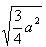
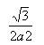
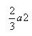
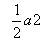
67. ১ হতে ৪৯ পর্যন্ত ক্রমিক সংখ্যা গুলোর গড় কত?
২৩
২৫
২৪.৫
২৬.৫
68. টাকায় ৩ টি করে আম ক্রয় করে টাকায় ২ টি করে আম বিক্রি করলে শতকরা কত লাভ হবে?
৫০%
৩০%
৩৩%
৩১%
69. ত্রিভুজ ABC এর BE=EF=CF। ABC ক্ষেত্রফল 48 বর্গফুট হলে ABC এর ক্ষেত্রফল কত বর্গফুট?
72
48
60
68
70. a+b=5 এবং a-b=3 হলে ab এর মান কত?
২
৪
৩
৫
71. ৬০ লিটার কেরোসিন ও পেট্রোলিয়ামের মিশ্রনের অনুপাত ৭ : ৩।ঐ মিশ্রনে আর কত লিটার পেট্রোল মিশালে অনুপাত ৩ : ৭ হবে?
৭০
৮০
৯০
৯৮
72. ১ হতে ৩০ পর্যন্ত কয়টি মৌলিক সংখ্যা আছে?
১২
১০
১১
৮
73. 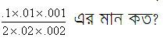
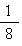
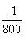
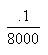
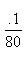
74. সরল সুদের হার শতকরা কত হলে যে কোন মূলধন ৮ বৎসরে সুদে আসলে ৩ গুন হবে?
১৩.৫০ টাকা
২০ টাকা
১৫ টাকা
২৫ টাকা
75. চিনির মূল্য ২৫% বৃদ্ধি পাওয়াতে একটি পরিবার চিনি খাওয়া এমনি ভাবে কমালো যে চিনি বাবদ ব্যয় বৃদ্ধি পেল না।ঐ পরিবারে চিনি খাওয়া খরচ শতকরা কত কমিয়েছিল?
২২%
২০%
২৫%
৩০%
76. 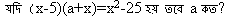
৫
-৫
২৫
-২৫
77. 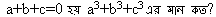
abc
3abc
6abc
9abc
78. ত্রিভুজের একটি কোন উহার অপর দুটি কোনের সমষ্টির সমান হলে ত্রিভুজটি-
সমকোনী
স্থুলকোণী
সমবাহু
সূক্ষ্মকোণী
79. নবায়ন যোগ্য শক্তি উৎসের একটি উদাহরন হলো-
পারমানবিক জ্বালানী
পীট কয়লা
ফুয়েল সেল
সূর্য
80. প্রেসার কুকারে রান্না তারাতারি হয় কারন-
রান্নার জন্য শুধু তাপ নয় চাপ ও কাজে লাগে
বন্ধ পাত্রে তাপ সংরক্ষিত হয়
উচ্চচাপে তরলের স্ফুনংক বৃদ্ধি পায়
সঞ্চিত বাষ্পের তাপ রান্নার সহায়ক
81. যে তিনটি মুখ্য বর্নের সমন্বয়ে অন্যান্য বর্ন সৃষ্টি করা যায় সেগুলি হল-
লাল-হলুদ-নীল
হলুদ-সবুজ-নীল
লাল-নীল-সবুজ
লাল-কমলা-বেগুনী
82. ভৌগলিক ভাবে গুরুত্বপূর্ন যে কাল্পনিক রেখাটি বাংলাদেশের উপর দিয়ে গিয়েছে তা হল-
র্মূল মধ্যারেখা
কর্কটক্রান্তি রেখা
মকরক্রান্তি রেখা
আন্তজার্তিক তারিখ রেখা
83. মাছ অক্সিজেন নেয়-
মাঝে মাঝে পানির উপর নাক তুলে
পানিতে অক্সজেন ও হাইড্রোজেন বিশিষ্ট করে
পটকার মধ্যে জমানো বাতাস হতে
পানির মধ্যে দ্রবিভূত বাতাস হতে
84. কচু শাক বিশেষভাবে মূল্যবান যে উপাদানের জন্য তা হলো-
ভিটামিন এ
ভিটামিন-সি
ক্যালসিয়াম
লৌহা
85. সাধারন ড্রাইসেলে ইলেকট্রোড হিসেবে থাকে?
তামার দন্ড ও দস্তার দন্ড
কার্বন দন্ড ও দস্তার কৌটা
তামার দন্ড ও দস্তার কৌটা
86. দূরের বিদ্যুৎ উৎপাদন কেন্দ্র হতে বিদ্যুৎ নিয়ে আসতে হলে হাইড্রোভোল্টেজ ব্যবহার করার কারন-
এতে বিদ্যুতের অপচয় কম হয়
এতে কমে গিয়েও প্রয়োজনীয় ভোল্টেজ বজায় থাকে
অধিক বিদ্যুৎ প্রবাহ পাওয়া যায়
প্রয়োজন মত ভোল্টেজ কমিয়ে ব্যবহার করা যায়
87. সংকর ধাতু পিতলের উপাদান হল-
তামা ও টিন
তামা ও দস্তা
তামা ও নিকেল
তামা ও সীসা
88. আমাদের দেহ কোষ রক্ত হতে গ্রহন করে-
অক্সিজেন ও গ্লুকোজ
অক্সিজেন ও রক্তের আমিষ
ইউরিয়া ও গ্লুকোজ
এমাইনো এসিড ও কার্বনডাই অক্সাইড
89. পৃথিবীর ঘুর্ননের ফলে আমরা ছিটকিয়ে পড়ি না-
মহাকর্ষ বলের জন্য
মাধ্যাকর্ষন বলের জন্য
পৃথিবীর সংঙ্গে আমাদের আবার্তনের জন্য
90. নিচের কোনটি জ্বীবাশ্ম জ্বালানী নয়-
পেট্রোলিয়াম
কয়লা
প্রাকৃতিক গ্যাস
বায়োগ্যাস
91. বৈদ্যুতিক মটর এমন একটি যন্ত্রকৌশল যা –
তাপ শক্তিকে যান্ত্রিক শক্তিতে রুপান্তরিত করে
তাপ শক্তিকে ত্বরিত শক্তিতে রুপান্তরিত করে
যান্ত্রিক শক্তিকে ত্বরিত শক্তিতে রুপান্তরিত করে
তড়িৎ শক্তিকে যান্ত্রিক শক্তিতে রুপান্তরিত করে
92. যে বায়ু সর্বদাই উচ্চচাপ অঞ্চল হতে নিম্নচাপ অঞ্চলের দিকে প্রবাহিত হয়,তাকে বলা হয়-
আয়নবায়ু
প্রতায়ন বায়ু
মৌসুমি বায়ু
নিয়নবায়ু
93. জলজ উদ্ভিদ অনেক ভাসতে পারে কারন-
এরা অনেক ছোট হয়
এদের কান্ডে অনেক বায়ু কুঠুরী থাকে
এরা পানিতে থাকে
এদের পাতা অনেক কম থাকে
94. নিরাপত্তা পরিষদের এশীয় আসনে বাংলাদেশের প্রতিদ্বন্ধী ছিল-
ফিলিপাইন
জাপান
ইন্দ্রোনেশিয়া
থাইল্যান্ড
95. নিকারাগুহার যে বিদ্রহীদের যুক্তরাষ্ট সমার্থন করে তার নাম-
ইউনিটা
সান্ডিনিটা
কন্ট্রা
সোয়াগো
96. বাংলাদেশ গনপ্রজাতন্ত্রের ঘোষনা হয়েছিল
১৭ এপ্রিল ১৯৭১
১৬ ডিসেম্বর ১৯৭২
৭ মার্চ ১৭৭৩
৭ মার্চ ১৭৭৪
97. গনপ্রজাতন্ত্রি বাংলাদেশের সংবিধান প্রবর্তিত হয়-
১৭ এপ্রিল ১৯৭১
১৬ ডিসেম্বর ১৯৭২
৭ মার্চ ১৭৭৩
৭ মার্চ ১৭৭৫
98. বিখ্যাত সাধক শাহ সুলতান বলখিল মাজার কোথায়-
মহাস্থানে
শাহজাদপুরে
নেত্রকোনায়
রামপালে
99. বাংলাদেশ লোকশিল্প জাদুঘর কোথায় অবস্থিত?
সোনারগাঁয়ে
মহাস্থানে
শাহজাদপুরে
নেত্রকোনায়
100. বাংলায় ইউরোপীয় বণিকদের মধ্যে বানিজ্যের জন্য প্রথম এসেছিল-
পর্তুগীজরা
ইংরেজরা
ত্তলন্দাজরা
ফরাসিরা